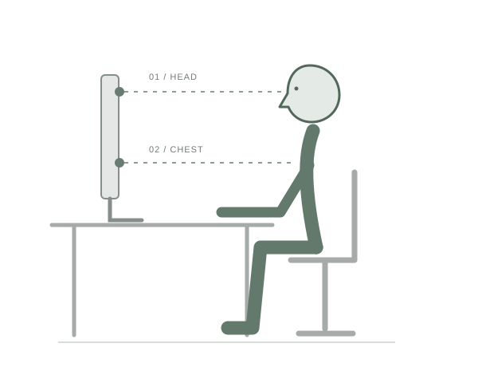

68070002 / เก้า
PHYSICAL COMPUTING PROJECT / 2026
SPYNE ต้นแบบผู้ช่วยสังเกตท่านั่งทำงาน
ด้วยเซนเซอร์สองระดับ โดยไม่ใช้กล้อง

01 / THE IDEA
ระยะสองจุด บอกความเปลี่ยนแปลงของท่าทาง
SPYNE เป็นโครงงานในรายวิชา Physical Computing คณะเทคโนโลยีสารสนเทศ สจล. ออกแบบเพื่อสังเกตท่านั่งหน้าคอมพิวเตอร์ โดยติดตั้ง Ultrasonic Sensor บริเวณขอบบนและส่วนล่างของหน้าจอ แล้วเปรียบเทียบระยะกับค่าที่ปรับเทียบไว้
เมื่อท่าที่ต้องปรับคงอยู่ต่อเนื่อง ระบบตามโค้ดต้นแบบจะแจ้งเตือนผ่าน RGB LED และ Buzzer พร้อมแสดงระยะและสถานะบน LCD
02 / EXPLORE THE LOGIC
เลือกท่าเพื่อดูตัวอย่างตรรกะในโค้ด
ข้อมูลจำลอง ไม่ได้เชื่อมต่ออุปกรณ์จริง
นั่งตรงและสั่ง Calibration ผ่าน Cloud เพื่อกำหนดระยะอ้างอิงของผู้ใช้
เฉลี่ยค่าที่อ่านได้ และรอยืนยันท่าใหม่ 4 รอบก่อนเปลี่ยนสถานะ
ไฟเหลืองในช่วงแรก และไฟแดงพร้อมเสียงหลังคงท่าที่ต้องปรับครบ 10 วินาที*
*เป็นค่าที่กำหนดใน SPYNE.ino ปัจจุบัน ไม่ใช่ผลวัดเวลาจากการทดลองจริง และอาจเปลี่ยนในเวอร์ชันถัดไป
03 / PROJECT FILM
เตรียมไว้สำหรับฝังวิดีโอจาก YouTube
ทีมผู้จัดทำจะถ่ายทำ อัปโหลด และเพิ่มลิงก์ภายหลัง04 / BUILT & TESTED BY THE TEAM
พื้นที่สำหรับหลักฐานจากชิ้นงานจริง
ภาพและวิดีโอส่วนนี้ต้องจัดทำโดยทีม
ทีมจะเติมวิธีทดสอบ จำนวนครั้ง สถานะที่ตรวจจับได้ ระยะเวลาแจ้งเตือน และข้อจำกัดที่พบหลังทดลอง
Arduino UNO R4 WiFi · HC-SR04 ×2 · RGB LED · LCD 16×2 I2C · Buzzer · Breadboard และอุปกรณ์ต่อวงจร
headDistance / chestDistance
อ่านอย่างเดียว · ทุก 3 วินาที
postureState
อ่านอย่างเดียว · เมื่อเปลี่ยนค่า
toleranceDistance
อ่าน/เขียน · ปรับค่าคลาดเคลื่อน
calibrateTrigger
อ่าน/เขียน · สั่งปรับเทียบ
README ระบุ Active Buzzer แต่ SPYNE.ino ระบุ Passive Buzzer และใช้ tone() ส่วนเงื่อนไข SLIDE / SLUMP ในโค้ดใช้ระยะหน้าอกไกลกว่าค่าอ้างอิงร่วมกับศีรษะปกติหรือใกล้ ซึ่งต่างจากตาราง README การสาธิตในหน้านี้ยึดโค้ดที่แนบ และต้องตรวจยืนยันกับฮาร์ดแวร์ก่อนสรุปผล
06 / THE MAKERS